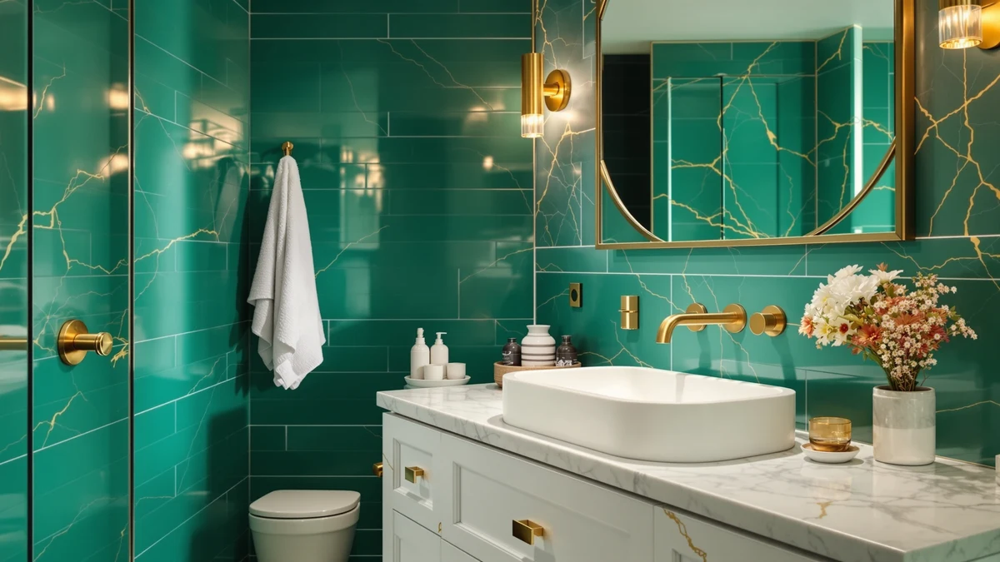

Best Deals on Bathroom Vanities with Tops (2026)
Prices and picks verified as of August 2026. Independent, reader-supported reviews.


Quick Answer
The best deals on bathroom vanities with tops this month span a $29.99 peel-and-stick refresh up to a $1,461 quartz-topped single-sink vanity, and which one counts as the better deal depends on whether you're replacing the whole unit or updating what's already installed. For pure value, the Stickyart peel-and-stick wallpaper lets you refresh a tired vanity top or cabinet face for under $30 in about 10 minutes, without touching your plumbing. If you want a full vanity with the sink and top already attached, the T4TREAM 36 Inch at $319.99 and the ARIEL Hepburn at $1,050.00 are the strongest picks at their respective price points.
Our pick: Stickyart 24"x160" Turquoise Wallpaper Peel, $29.99 Check Price on Amazon
Bottom line: our top pick is the Stickyart 24"x160" Turquoise Wallpaper Peel and Stick Teal at $29.99. The best budget option is the ARIEL Hepburn 36-inch Bathroom Vanity with Sink at $1.
Things to Know Before You Buy
- "Vanity with a top" doesn't mean the same thing across every listing. The T4TREAM, ONBRILL, and both LIKIMIO vanities ship with a sink already fitted, but none of them name a specific countertop material.
- Prices in this comparison run from $29.99 to $1,461.00. That's the widest spread in any guide on this site, because it covers a cosmetic fix alongside full quartz-topped vanities.
- Only the two ARIEL vanities list a named countertop material. Both the Hepburn and the Taylor specify a quartz top and solid wood construction; the rest include a sink but stop there.
- Review data varies a lot between picks. The ARIEL Hepburn has 28 verified reviews and the ARIEL Taylor has 15, while both LIKIMIO vanities have just 1 and the Stickyart wallpaper has none yet.
- If your current vanity top is intact but dated, the cheapest deal here isn't a vanity at all. The Stickyart peel-and-stick wallpaper costs a fraction of any full vanity swap on this list.
The best deals on bathroom vanities with tops this month cover a wide range, from a $29.99 peel-and-stick vinyl wrap that hides a dated countertop in about ten minutes to a $1,461 quartz-topped vanity built to anchor a full remodel. Most buyers land somewhere between those extremes, hunting for a single-sink vanity where the top and sink already come attached, so there's no separate countertop order or cutout to measure. That gap between a cosmetic fix and a full cabinet swap is what makes vanity shopping confusing, because a listing that says "with sink" doesn't always mean it ships with a countertop material worth naming.
We built this comparison by pulling current Amazon pricing, dimensions, and verified review counts for seven listings tagged for bathroom vanities, then checking what each one actually includes before calling it a deal. Two of the seven, the ARIEL Hepburn and ARIEL Taylor, list a named quartz countertop alongside solid wood construction, which puts them in a different category than a bare cabinet. Four more, the T4TREAM, ONBRILL, and both LIKIMIO vanities, ship with a sink already fitted, though their listings don't name a separate countertop material. The seventh, the Stickyart wallpaper, isn't a vanity at all, but it's the cheapest way in this guide to change how your existing vanity top looks.
For most people replacing a full vanity, the T4TREAM 36 Inch at $319.99 and the ARIEL Hepburn at $1,050.00 are the strongest deals at their respective price points, the first for a modern fluted single vanity under $350, the second for a quartz-topped upgrade with 28 verified reviews behind it. If your current vanity top just looks tired rather than broken, the Stickyart peel-and-stick wallpaper is the better deal by a wide margin. Below, we break down all seven picks, what each one includes, and where the tradeoffs actually are.
Why You Should Trust Us
Best Bathroom Vanities covers one category of home fixture: the cabinets, sinks, and countertops that make up a bathroom vanity. Ilane Tall has spent the past several years comparing vanity listings across price tiers, tracking which ones ship with a sink or top already attached versus which ones are bare cabinets sold separately. For this guide to the best deals on bathroom vanities with tops, we pulled pricing and specification data directly from each Amazon listing, checked which products name a specific countertop material like quartz, and cross-referenced review counts against what each brand claims. We don't run a paid testing lab and we don't invent expert quotes. We read the same listings you can, compare the numbers, and tell you where a deal is real and where a listing is dressed up to look like more than it is.
How We Picked
We started by requiring that every pick belong to the bathroom vanities category and represent a genuine price point, from budget cosmetic fixes to premium quartz-topped units, so the lineup covers real options rather than clustering at one price. From there we prioritized listings that state clearly what ships in the box, a sink, a countertop material, or both, since a vanity described as having a "top" should mean more than an empty cabinet. We included the Stickyart peel-and-stick wallpaper because at $29.99 it's the least expensive way in this guide to address a dated vanity top, even though it isn't a vanity itself, and because deal-focused shoppers often weigh a cosmetic fix against a full swap. We excluded listings with vague specifications, no stated material, no listed finish, or pricing that looked inflated relative to comparable vanities of the same size. We also noted review counts and star ratings where Amazon provides them, since a $319.99 T4TREAM vanity with 6 verified reviews carries more weight than an identically priced listing with none.
How We Compared
Comparing vanities and countertop products before they ship means comparing the numbers on each listing, not a showroom floor model. For each pick, we checked price against what's actually included, sink, countertop material, and hardware, so a $1,461 ARIEL Taylor with a named quartz top and a $319.99 T4TREAM with an unspecified top aren't treated as apples-to-apples on price alone. We compared listed dimensions, 28 to 54 inches wide, against common single-sink layouts, and we cross-referenced star ratings and review counts where available, since only six of the seven picks in this guide have any verified reviews at all. We also weighed the Stickyart wallpaper against the vanities on a cost-per-fix basis rather than cost-per-vanity, since a $29.99 cosmetic wrap and a $1,050 quartz-topped vanity solve different problems even though both show up when you search for vanity deals.
Our Picks

Stickyart 24"x160" Turquoise Wallpaper Peel
What we like
- Costs $29.99, the least expensive pick in this entire comparison by a wide margin
- Self-adhesive vinyl applies in about 10 minutes per the listing, with no glue or tools required
- Waterproof construction suits a vanity top, backsplash, or cabinet face where moisture is a daily reality
- One 24-inch by 160-inch roll covers close to 27 square feet, enough for a full vanity top and surrounding cabinet face in most bathrooms
Flaws but not dealbreakers
- It has no rating or review count on Amazon yet, so there's no track record to point to
- It changes the look of a vanity top, it doesn't repair chips, water damage, or a failing sink drain
- Teal green is a specific color commitment, and swapping it later means another roll and another application
| Material | MDF / engineered wood |
| Size | 24" x 160" |
The Stickyart wallpaper is not a bathroom vanity, and it's worth being upfront about that before anything else. It's a 24-inch by 160-inch roll of self-adhesive vinyl in teal green, priced at $29.99, positioned for covering cabinets, countertops, and vanity tops rather than replacing them. For anyone whose vanity top is structurally fine but looks dated or stained, that distinction is exactly the point: it's the cheapest deal on this entire list because it solves a cosmetic problem instead of a structural one.
According to the listing, the vinyl applies in under 10 minutes with an air-release backing meant to avoid bubbles, and one roll covers close to 27 square feet, enough to wrap a vanity top and the cabinet face beneath it in most bathrooms. It's waterproof, which matters more here than on a bedroom wall, and it's removable, so it doesn't lock you into teal green permanently. It won't fix a cracked countertop, a leaking sink base, or outdated plumbing, and it carries no reviews yet on Amazon, so treat it as a stopgap deal rather than a long-term fixture the way the vanities further down this list are meant to be.

T4TREAM 36 Inch Bathroom Vanity
What we like
- At $319.99, it undercuts both ARIEL vanities by hundreds of dollars while still shipping with the sink attached
- Modern fluted door and drawer fronts in natural oak read as a higher-end finish than the price suggests
- Built-in storage cabinet gives you drawer and shelf space beneath the sink, unlike a bare 36-inch cabinet
- Rated 5 out of 5 across 6 verified reviews, the highest review count among the mid-priced picks in this guide
Flaws but not dealbreakers
- The listing doesn't name a specific countertop material the way the ARIEL Hepburn names quartz, so treat the top as sink-integrated rather than a separately upgraded surface
- Six reviews is a real but still limited sample compared with the ARIEL Hepburn's 28
- Natural oak fluting is a specific look, and it won't match every bathroom's existing cabinetry or hardware finish
| Material | MDF / engineered wood |
| Size | 36 inch |
The T4TREAM 36 Inch is a modern fluted single vanity with the sink already fitted, priced at $319.99, which puts it well below both ARIEL vanities in this guide while still qualifying as a full vanity with a top rather than a bare cabinet. Its natural oak finish and fluted door fronts give it a more considered look than most vanities at this price, and the storage cabinet beneath the sink adds drawer space that a stripped-down cabinet wouldn't include.
It carries a 5 out of 5 rating across 6 verified reviews on Amazon, a small but genuine sample that at least confirms real buyers received a working unit. The listing doesn't call out a specific countertop material the way the ARIEL Hepburn names its Carrara white quartz, so the top here reads as sink-integrated rather than a distinct upgraded surface, worth knowing if a named stone countertop matters to you. At 36 inches wide, it fits the same footprint as the ARIEL Hepburn and both LIKIMIO 36-inch options, making direct comparison on price alone straightforward.

ONBRILL 28 Inch Modern Bathroom
What we like
- Ships with a ceramic sink already installed, so there's no separate sink purchase or cutout to plan around
- Soft-closing doors on both cabinet doors are a detail usually reserved for pricier vanities
- At 28 inches wide, it fits bathrooms too small for the 36-inch and 30-inch picks in this guide
- Rated 5 out of 5 across 3 verified reviews
Flaws but not dealbreakers
- At $339.99, it's priced slightly above the wider 36-inch T4TREAM, so you're paying a premium for the compact footprint and ceramic sink combination
- Three reviews is the smallest sample among the rated vanities in this guide, aside from the two LIKIMIO listings
- Green is a distinctive color choice that won't suit every bathroom's existing palette
| Material | MDF / engineered wood |
| Size | 28 inch |
The ONBRILL 28 Inch is a freestanding vanity with a ceramic sink already installed, finished in a bold green with two soft-closing doors. At $339.99, it costs slightly more than the wider T4TREAM 36 Inch, and the reason is the included ceramic sink plus the compact 28-inch footprint aimed at bathrooms where a 30 or 36-inch vanity simply won't fit.
Soft-close hardware on both doors is a small but real detail, since it's the kind of feature that usually shows up only on pricier vanities, and here it comes standard at a mid-range price. It holds a 5 out of 5 rating across 3 verified reviews on Amazon, a smaller sample than the T4TREAM or ARIEL Hepburn but still a real signal rather than no data at all. If your bathroom's constraint is width rather than budget, the ceramic sink and soft-close doors make this one of the better deals on a compact bathroom vanity with a top in this guide.

LIKIMIO 30 Inch Bathroom Vanity
What we like
- At $279.99, it's the least expensive full vanity with a sink in this comparison
- Adjustable solid wood legs let you level the vanity on an uneven bathroom floor without shims
- Built-in towel holder is a functional extra that none of the other vanities in this guide list
- White finish is a safer match for more bathroom color schemes than the ONBRILL's green or the LIKIMIO 36's black
Flaws but not dealbreakers
- Only 1 review backs up its 5 out of 5 rating, the thinnest sample in this entire guide
- At 30 inches, it splits the difference between the 28-inch ONBRILL and the 36-inch options, which may or may not match your existing footprint
- The listing doesn't name a specific countertop material beyond the integrated sink
| Material | MDF / engineered wood |
| Size | 30 inch |
The LIKIMIO 30 Inch pairs a sink, a towel holder, and adjustable solid wood legs in a white finish, priced at $279.99, the lowest price among the full vanities in this guide. Legs that adjust for an uneven floor are a small detail that matters more than it sounds once you're actually installing a vanity in an older bathroom, where the subfloor is rarely perfectly level.
The built-in towel holder is a genuine convenience that none of the other six picks in this guide list as a feature, and the white finish is a safer bet for matching existing tile or paint than the ONBRILL's green or the LIKIMIO 36's black. Its 5 out of 5 rating is backed by only 1 review, which isn't enough data to call it proven, so weigh that against the low price when deciding whether this is the deal it looks like on paper.

LIKIMIO 36 Inch Bathroom Vanity
What we like
- Same adjustable solid wood legs and built-in towel holder as the LIKIMIO 30 Inch, in a wider 36-inch footprint
- At $319.99, it matches the T4TREAM's price while adding the towel holder feature the T4TREAM doesn't list
- Black finish pairs well with matte black fixtures and hardware if that's your bathroom's existing palette
- 36-inch width matches the T4TREAM and ARIEL Hepburn, making a direct size comparison easy
Flaws but not dealbreakers
- Like the LIKIMIO 30, its 5 out of 5 rating rests on just 1 review
- Black shows water spots and dust more visibly than the white LIKIMIO 30 or natural oak T4TREAM
- No named countertop material beyond the integrated sink, the same limitation as the T4TREAM and ONBRILL
| Material | MDF / engineered wood |
| Size | 36 inch |
The LIKIMIO 36 Inch is the wider, black-finish counterpart to the LIKIMIO 30 Inch above, carrying over the same towel holder and adjustable solid wood legs at $319.99, a price that lines up exactly with the T4TREAM 36 Inch. The extra 6 inches of width over the LIKIMIO 30 puts it in the same footprint bracket as the T4TREAM and the ARIEL Hepburn, so it's a straightforward size comparison against either one.
What sets it apart from the T4TREAM at the same price is the towel holder, a small but real convenience the T4TREAM's listing doesn't mention. The tradeoff is the same one-review sample behind its 5 out of 5 rating that limits the LIKIMIO 30, so the rating is a data point rather than a track record. Black also shows water spots more readily than a white or natural oak finish, worth factoring in if daily cleaning is a concern.

ARIEL Hepburn 36-inch Bathroom Vanity
What we like
- The only 36-inch pick in this guide with a specifically named countertop material, Carrara white quartz, rather than an unspecified integrated top
- Solid wood cabinet construction, a step up from the MDF and engineered wood common at lower price points
- Rated 4.9 out of 5 across 28 verified reviews, by far the largest and most reliable review sample in this comparison
- White finish with Carrara-pattern quartz reads as a cohesive, higher-end look out of the box
Flaws but not dealbreakers
- At $1,050.00, it costs more than three times the T4TREAM or either LIKIMIO vanity at the same 36-inch width
- That price premium is specifically for the named quartz top and solid wood build, not for extra width or storage
- It's a significant jump from every other pick in this guide except the ARIEL Taylor, so it only makes sense if a quartz top is a real priority
| Material | MDF / engineered wood |
| Size | 36 inch |
The ARIEL Hepburn is the first vanity in this guide to name its countertop material outright: Carrara white quartz, paired with solid wood cabinet construction and priced at $1,050.00. That's more than three times what the T4TREAM or either LIKIMIO vanity costs at the same 36-inch width, and the difference is specifically the quartz top and solid wood build rather than any extra size or storage.
It backs that price up with 28 verified reviews and a 4.9 out of 5 rating, by far the deepest track record of any pick in this comparison. For anyone who considers a named stone countertop non-negotiable, rather than an unspecified sink-integrated top like the T4TREAM or LIKIMIO vanities, the Hepburn is the strongest deal in this guide at that requirement, even though it isn't the cheapest way to get a 36-inch vanity with a sink.

ARIEL Taylor 54-inch Bathroom Vanity
What we like
- At 54 inches, it's by far the widest single vanity in this guide, covering more counter space than any other pick without pairing two cabinets
- Quartz countertop and solid wood construction match the ARIEL Hepburn's build quality at a larger scale
- Rated 4.9 out of 5 across 15 verified reviews, a solid sample for a vanity at this price and size
- Midnight blue finish stands out from the white, black, and natural oak options elsewhere in this guide
Flaws but not dealbreakers
- At $1,461.00, it's the most expensive pick in this entire comparison by several hundred dollars
- 54 inches of width needs a bathroom with the wall space to match, which rules it out for the compact bathrooms the ONBRILL or LIKIMIO 30 suit
- Midnight blue is a bold, specific color commitment compared with more neutral finishes elsewhere on this list
| Material | MDF / engineered wood |
| Size | 54 inch |
The ARIEL Taylor is the widest vanity in this guide at 54 inches, built with solid wood construction and a quartz countertop in a midnight blue finish that stands apart from every other color on this list. At $1,461.00, it's also the most expensive pick here, a price that reflects both the quartz top shared with the ARIEL Hepburn and the extra 18 inches of width over that model.
It carries a 4.9 out of 5 rating across 15 verified reviews, a solid track record for a vanity at this size and price, even if it trails the Hepburn's 28-review sample. Fifty-four inches of width only makes sense if your bathroom actually has that much wall space to give a single vanity, since it would overwhelm the smaller footprints suited to the ONBRILL or either LIKIMIO pick. For a primary bathroom being built around one wide, quartz-topped vanity rather than two combined cabinets, the Taylor is the strongest deal in this guide at that specific size, even if it's far from the cheapest.
Quick Comparison
| Product | Material | Price | Rating | Best for | Get it |
|---|---|---|---|---|---|
| Stickyart 24"x160" Turquoise Wallpaper Peel | MDF / engineered wood | $29.99 | 4 | Best budget deal on refreshing a vanity top | View on Amazon → |
| T4TREAM 36 Inch Bathroom Vanity | MDF / engineered wood | $319.99 | 5 | Best all-around deal on a 36-inch vanity with sink | View on Amazon → |
| ONBRILL 28 Inch Modern Bathroom | MDF / engineered wood | $339.99 | 5 | Best for compact 28-inch bathrooms | View on Amazon → |
| LIKIMIO 30 Inch Bathroom Vanity | MDF / engineered wood | $279.99 | 5 | Cheapest full vanity with sink in this guide | View on Amazon → |
| LIKIMIO 36 Inch Bathroom Vanity | MDF / engineered wood | $319.99 | 5 | Same features as the LIKIMIO 30, in black and 36 inches | View on Amazon → |
| ARIEL Hepburn 36-inch Bathroom Vanity | MDF / engineered wood | $1,050.00 | 4.9 | Best quartz-topped 36-inch vanity | View on Amazon → |
| ARIEL Taylor 54-inch Bathroom Vanity | MDF / engineered wood | $1,461.00 | 4.9 | Widest vanity here, quartz top included | View on Amazon → |
What's the best deal on a bathroom vanity with a top right now?
It depends on your budget and whether you're replacing the whole vanity or just refreshing it.
Do all of these vanities include a sink and countertop, or just the cabinet?
No.
The Competition
The T4TREAM 36 Inch and both LIKIMIO vanities compete directly on price, sitting within $40 of each other at $279.99, $319.99, and $319.99. The LIKIMIO 30 Inch is the cheapest of the three but backs its 5 out of 5 rating with only 1 review, versus the T4TREAM's 6 reviews at the same rating. If a towel holder and adjustable legs matter more than review depth, either LIKIMIO edges out the T4TREAM; if a slightly larger review sample matters more, the T4TREAM is the safer $320 bet.
The two ARIEL vanities occupy their own tier entirely, both naming a quartz countertop and solid wood construction well above the $1,000 mark. The Hepburn's 28 reviews give it a deeper track record than the Taylor's 15, but the Taylor's 54-inch width serves a different use case, a single wide vanity instead of a 36-inch unit. Neither directly threatens the other; the choice comes down to how much wall space you actually have.
The ONBRILL 28 Inch sits in its own compact category, and nothing else in this guide matches its 28-inch footprint with an included ceramic sink. Its closest competitor on price is the T4TREAM, but the two serve different bathroom sizes entirely, so the ONBRILL's real competition is any 28-inch vanity outside this guide, not the wider options here.
Across all seven picks, the best deals on bathroom vanities with tops in this comparison split cleanly by budget: the Stickyart wallpaper is unmatched under $30 for anyone refreshing rather than replacing, the T4TREAM and both LIKIMIO vanities cover the $280 to $320 range for a full vanity with sink, and the two ARIEL vanities own the quartz-top tier above $1,000.
Frequently Asked Questions
What's the best deal on a bathroom vanity with a top right now?
It depends on your budget and whether you're replacing the whole vanity or just refreshing it. For a full vanity with the sink already fitted, the T4TREAM 36 Inch at $319.99 is the strongest deal in the sub-$350 range, and the ARIEL Hepburn at $1,050.00 is the best option if you specifically want a named quartz countertop. If your existing vanity top just needs a cosmetic refresh, the Stickyart peel-and-stick wallpaper at $29.99 is the cheapest deal in this entire guide.
Do all of these vanities include a sink and countertop, or just the cabinet?
No. The T4TREAM, ONBRILL, and both LIKIMIO vanities ship with a sink already installed, but their listings don't name a specific countertop material. The ARIEL Hepburn and ARIEL Taylor go a step further and specify a quartz countertop alongside solid wood construction. The Stickyart pick isn't a vanity at all, it's a peel-and-stick wallpaper meant to refresh the look of a top or cabinet you already own.
Is a peel-and-stick wallpaper actually a good alternative to buying a new vanity?
It depends on what's wrong with your current vanity. If the top is scratched, stained, or just an outdated color but the sink and cabinet still work fine, the Stickyart wallpaper at $29.99 can refresh the look in about 10 minutes according to the listing, at a fraction of any vanity on this list. It won't fix a cracked countertop, a failing sink, or plumbing issues, so treat it as a cosmetic deal rather than a repair.